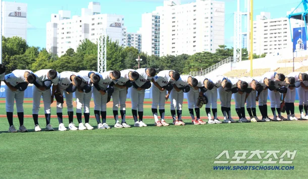

"스타벅스 가야지" 충격 논란, 배재고 응원 주도 학생 2명…결국 유니폼 벗었다 : 네이트 스포츠

야구계 관계자들에 따르면 배재고 소속으로 청룡기 전국고교야구선수권대회에 참가했다가,
광주 지역 비하 응원을 선창한 선수 2명이 최근 야구부 생활을 포기하기로 한 것으로 알려졌다.
두 선수는 최근 야구를 그만두겠다는 의사를 학교측에 전달한 것으로 확인됐다.
"스타벅스 가야지" 충격 논란, 배재고 응원 주도 학생 2명…결국 유니폼 벗었다 : 네이트 스포츠

야구계 관계자들에 따르면 배재고 소속으로 청룡기 전국고교야구선수권대회에 참가했다가,
광주 지역 비하 응원을 선창한 선수 2명이 최근 야구부 생활을 포기하기로 한 것으로 알려졌다.
두 선수는 최근 야구를 그만두겠다는 의사를 학교측에 전달한 것으로 확인됐다.
댓글
수집 당시 댓글 7개
dcdnf13 · 18 시간 전
즐기시게냅둬 · 17 시간 전
???: 민주화당했노 이기
오르다말아 · 17 시간 전
이게 현대예술이지
냐냐냥냥냐냥 · 17 시간 전
이제 몇년뒤에 극우유튜브 나와서 나는 피해자다 하는게 이 이야기의 완성임
ㅇㅇ1 · 13 시간 전
일베들 전부 사형하라
마닐라보스 · 7 시간 전
좌파우파 국힘 민주당 다 뒤졌으면 좋겠다 이 사회를 좀먹는 새끼들 ㅋㅋㅋ
평탄한삶 · 3 시간 전
본인인생이 가버렷노 ㅋㅋ